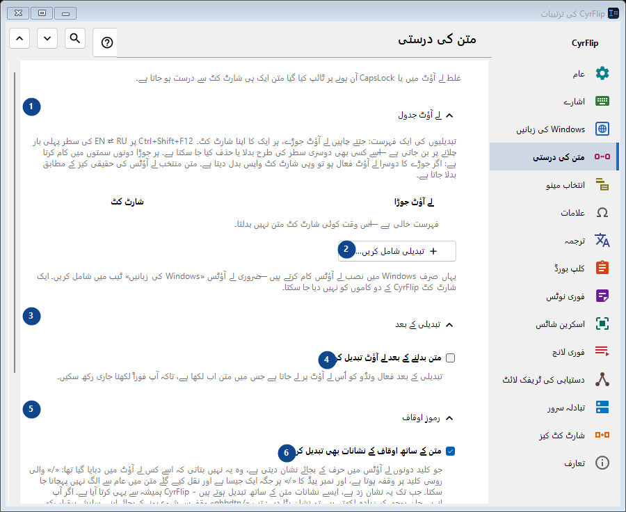
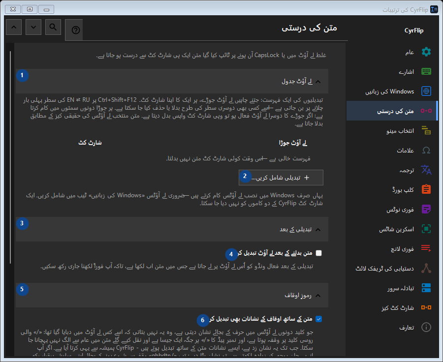

متن کی درستی
مقصد
غلط لے آؤٹ میں یا CapsLock آن ہونے پر ٹائپ کیا گیا متن ایک ہی شارٹ کٹ سے درست ہو جاتا ہے۔


استعمال کی ترتیب
ترتیبات فوراً لاگو ہوتی ہیں۔ کوئی لازمی ترتیب نہیں؛ نیچے کے گروپ استعمال کریں۔
عناصر
1. لے آؤٹ جدول
درج شدہ کارروائی کے لیے یہ حکم استعمال کریں۔ قبول کرنے سے پہلے تصدیق پڑھیں۔
آپ کے شارٹ کٹ2. تبدیلی شامل کریں...
درج شدہ کارروائی کے لیے یہ حکم استعمال کریں۔ قبول کرنے سے پہلے تصدیق پڑھیں۔
آپ کے شارٹ کٹ3. تبدیلی کے بعد
درج شدہ کارروائی کے لیے یہ حکم استعمال کریں۔ قبول کرنے سے پہلے تصدیق پڑھیں۔
آپ کے شارٹ کٹ4. متن بدلنے کے بعد لے آؤٹ تبدیل کریں
تبدیلی کے بعد فعال ونڈو کو اُس لے آؤٹ پر لے جاتا ہے جس میں متن اب لکھا ہے، تاکہ آپ فوراً لکھنا جاری رکھ سکیں۔
آپ کے شارٹ کٹ5. رموزِ اوقاف
درج شدہ کارروائی کے لیے یہ حکم استعمال کریں۔ قبول کرنے سے پہلے تصدیق پڑھیں۔
آپ کے شارٹ کٹ6. متن کے ساتھ اوقاف کے نشانات بھی تبدیل کریں
جو کلید دونوں لے آؤٹس میں حرف کے بجائے نشان دیتی ہے، وہ یہ نہیں بتاتی کہ اسے کس لے آؤٹ میں دبایا گیا تھا: «/» والی روسی کلید پر وقفہ ہوتا ہے، اور نمبر پیڈ کا «/» ہر جگہ ایک جیسا ہے اور نقل کیے گئے متن میں عام سے الگ نہیں پہچانا جا سکتا۔ جب تک یہ نشان زد ہے، ایسے نشانات متن کے ساتھ تبدیل ہوتے ہیں - CyrFlip ہمیشہ سے یہی کرتا آیا ہے۔ اگر آپ انہیں جان بوجھ کر زیادہ لکھتے ہیں تو نشان ہٹا دیں: تب «/ghbdtn» وقفے سے شروع ہونے کے بجائے اپنی سلیش برقرار رکھے گا۔ جن نشانات کی کلید پر دوسرے لے آؤٹ میں حرف ہوتا ہے (کوما، قوسین) وہ ہر صورت تبدیل ہوتے ہیں۔
آپ کے شارٹ کٹ7. حروف کی حالت
درج شدہ کارروائی کے لیے یہ حکم استعمال کریں۔ قبول کرنے سے پہلے تصدیق پڑھیں۔
آپ کے شارٹ کٹ8. CapsLock درست کریں
منتخب متن کے بڑے اور چھوٹے حروف آپس میں بدل دیتا ہے؛ غلطی سے CapsLock آن رہ جانے پر مفید۔
آپ کے شارٹ کٹ9. تبدیل کریں - CapsLock درست کریں
درج شدہ کارروائی کے لیے یہ حکم استعمال کریں۔ قبول کرنے سے پہلے تصدیق پڑھیں۔
آپ کے شارٹ کٹ10. کیس درست کرنے کے بعد CapsLock ہم آہنگ کریں
کیس درست کرنے کے بعد CapsLock کی حقیقی حالت بدل دیتا ہے، تاکہ آگے کی ٹائپنگ درست متن سے میل کھائے۔
آپ کے شارٹ کٹ